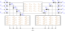

Lines
A line is a multi-conductor power cable or overhead line, modelled as a nominal $\Pi$ equivalent: a series impedance with a shunt admittance half-section at each end. Parts 1–5 state the foundational (physics) model. Symbols are defined in Notation.

1. Data model
A line is an entry of the top-level line object, keyed by its string ID $\ell$. It carries exactly one impedance source: either a referenced linecode (per-metre matrices scaled by length) or inline absolute matrices.
| Field | Type | Unit | Req. | Description |
|---|---|---|---|---|
bus_from, bus_to | string | – | ✔ | Endpoint bus IDs $i$, $j$ |
terminal_map_from | string[] | – | ✔ | Conductor→terminal map at bus_from, $\textcolor{purple}{\mathbf{N}_{\ell i}}$ |
terminal_map_to | string[] | – | ✔ | Conductor→terminal map at bus_to, $\textcolor{purple}{\mathbf{N}_{\ell j}}$ |
linecode | string | – | (one-of) | Linecode ID (per-metre matrices) |
length | number | m | (with linecode) | Line length $\textcolor{red}{L_\ell}$ |
R_series_k_j, X_series_k_j | number | Ω | (one-of) | Inline absolute series impedance entries |
G_from_k_j, B_from_k_j | number | S | Inline from-side shunt admittance entries | |
G_to_k_j, B_to_k_j | number | S | Inline to-side shunt admittance entries | |
i_max | number[] | A | Per-conductor current-magnitude limit (overrides linecode) | |
s_max | number[] | VA | Per-conductor apparent-power limit (overrides linecode) |
The oneOf schema rule requires either linecode + length or at least R_series_1_1 + X_series_1_1 inline (and then no linecode).
Linecode
A linecode $c$ stores per-metre matrices shared across lines of the same type.
| Field | Type | Unit | Req. | Description |
|---|---|---|---|---|
R_series_k_j, X_series_k_j | number | Ω/m | ✔ | Per-metre series impedance $\mathfrak{R},\mathfrak{I}(\textcolor{brown}{\mathbf{Z}^{\text{s}}_c})$ |
G_from_k_j, G_to_k_j | number | S/m | Per-metre shunt conductance | |
B_from_k_j, B_to_k_j | number | S/m | Per-metre shunt susceptance | |
i_max | number[] | A | Per-conductor current limit $\textcolor{red}{\mathbf{I}^{\max}_c}$ | |
s_max | number[] | VA | Per-conductor apparent-power limit | |
source | string | – | Free-text provenance note for the impedance/admittance matrices (e.g. fem, datasheet, import); descriptive metadata only, no effect on the electrical model |
2. Input symbols
| Field | Symbol | Notes |
|---|---|---|
linecode R_series, X_series | $\textcolor{brown}{\mathbf{Z}^{\text{s}}_c}=\mathbf{R}+\textcolor{brown}{j}\mathbf{X}$ | Ω/m matrix |
linecode G/B_from, G/B_to | $\textcolor{brown}{\mathbf{Y}^{\text{sh}}_c}=\mathbf{G}+\textcolor{brown}{j}\mathbf{B}$ | S/m matrix |
length | $\textcolor{red}{L_\ell}$ | metres |
line R_series/X_series, G/B_* | $\textcolor{brown}{\mathbf{Z}^{\text{s}}_\ell},\ \textcolor{brown}{\mathbf{Y}^{\text{sh}}_{\ell ij}},\ \textcolor{brown}{\mathbf{Y}^{\text{sh}}_{\ell ji}}$ | Ω, S (absolute) |
i_max | $\textcolor{red}{\mathbf{I}^{\max}_{\ell ij}}$ | per conductor |
s_max | $\textcolor{red}{\mathbf{S}^{\max}_{\ell ij}}$ | per conductor |
Parameter construction
The line's series impedance and shunt admittances come from one source:
\[\text{linecode: }\quad \textcolor{brown}{\mathbf{Z}^{\text{s}}_\ell} = \textcolor{brown}{\mathbf{Z}^{\text{s}}_c}\,\textcolor{red}{L_\ell}, \qquad \textcolor{brown}{\mathbf{Y}^{\text{sh}}_{\ell ij}} = \textcolor{brown}{\mathbf{Y}^{\text{sh}}_{\ell ji}} = \tfrac{1}{2}\,\textcolor{brown}{\mathbf{Y}^{\text{sh}}_c}\,\textcolor{red}{L_\ell};\]
or the inline absolute matrices are used directly (never scaled by length). Inline data permits independent from- and to-side shunts $\textcolor{brown}{\mathbf{Y}^{\text{sh}}_{\ell ij}}\neq\textcolor{brown}{\mathbf{Y}^{\text{sh}}_{\ell ji}}$.
3. Variables
A line has $n_\ell = |\textcolor{purple}{\mathbf{N}_{\ell i}}|$ conductors. The series current flowing from $i$ toward $j$ is the independent unknown:
\[\textcolor{blue}{\mathbf{I}^{\text{s}}_{\ell ij}} \in \mathbb{C}^{n_\ell}.\]
The terminal current $\textcolor{blue}{\mathbf{I}_{\ell ij}}$ (what enters the bus's KCL) and the shunt current $\textcolor{blue}{\mathbf{I}^{\text{sh}}_{\ell ij}}$ are the other line currents; the equalities of part 4 relate them to $\textcolor{blue}{\mathbf{I}^{\text{s}}_{\ell ij}}$ and the bus voltages.
4. Equality constraints
Ohm's law (series voltage drop)
Across the series impedance, for the forward orientation $\ell ij$:
\[\textcolor{blue}{\mathbf{U}_j}[\textcolor{purple}{\mathbf{N}_{\ell j}}] = \textcolor{blue}{\mathbf{U}_i}[\textcolor{purple}{\mathbf{N}_{\ell i}}] - \textcolor{brown}{\mathbf{Z}^{\text{s}}_\ell}\,\textcolor{blue}{\mathbf{I}^{\text{s}}_{\ell ij}}.\]
The impedance matrix is full: off-diagonal entries couple the voltage drop on one conductor to the current in another.
Shunt currents
Each $\Pi$ half-section draws a current set by its admittance and the local bus voltage:
\[\textcolor{blue}{\mathbf{I}^{\text{sh}}_{\ell ij}} = \textcolor{brown}{\mathbf{Y}^{\text{sh}}_{\ell ij}}\,\textcolor{blue}{\mathbf{U}_i}, \qquad \textcolor{blue}{\mathbf{I}^{\text{sh}}_{\ell ji}} = \textcolor{brown}{\mathbf{Y}^{\text{sh}}_{\ell ji}}\,\textcolor{blue}{\mathbf{U}_j}.\]
Terminal current and series-current conservation
The current entering the line at each bus is the series current plus that end's shunt current, and the two directional series currents are equal and opposite:
\[\textcolor{blue}{\mathbf{I}_{\ell ij}} = \textcolor{blue}{\mathbf{I}^{\text{s}}_{\ell ij}} + \textcolor{blue}{\mathbf{I}^{\text{sh}}_{\ell ij}}, \qquad \textcolor{blue}{\mathbf{I}_{\ell ji}} = \textcolor{blue}{\mathbf{I}^{\text{s}}_{\ell ji}} + \textcolor{blue}{\mathbf{I}^{\text{sh}}_{\ell ji}}, \qquad \textcolor{blue}{\mathbf{I}^{\text{s}}_{\ell ij}} + \textcolor{blue}{\mathbf{I}^{\text{s}}_{\ell ji}} = \mathbf{0}.\]
The terminal currents $\textcolor{blue}{\mathbf{I}_{\ell ij}},\textcolor{blue}{\mathbf{I}_{\ell ji}}$ are the contributions this line makes to KCL at buses $i$ and $j$ (see Buses §4).
5. Inequality constraints
Cartesian variable bounds
A box may be placed on the series-current variable $\textcolor{blue}{\mathbf{I}^{\text{s}}_{\ell ij}}$ to bound the search. Because the engineering limit constrains the total (terminal) current, the box on the series part is the limit inflated by the worst-case shunt contribution $\rho_k$ on that row:
\[|\mathfrak{R}(\textcolor{blue}{I^{\text{s}}_{\ell ij,k}})| \le \textcolor{red}{I^{\max}_{\ell ij,k}} + \rho_k, \qquad |\mathfrak{I}(\textcolor{blue}{I^{\text{s}}_{\ell ij,k}})| \le \textcolor{red}{I^{\max}_{\ell ij,k}} + \rho_k,\]
with $\rho_k \le \sum_{j'} |\textcolor{brown}{Y^{\text{sh}}_{\ell ij,kj'}}|\,\textcolor{red}{U^{\max}_{i,j'}}$ from the endpoint voltage caps. This is a solver-conditioning aid; it is implied by the engineering bound below.
Engineering bounds
Thermal current limit on the terminal current, at both ends, for all conductors including neutral:
\[\textcolor{blue}{\mathbf{I}_{\ell ij}}\circ(\textcolor{blue}{\mathbf{I}_{\ell ij}})^{*} \le \textcolor{red}{\mathbf{I}^{\max}_{\ell ij}}\!\circ\textcolor{red}{\mathbf{I}^{\max}_{\ell ij}}, \qquad \textcolor{blue}{\mathbf{I}_{\ell ji}}\circ(\textcolor{blue}{\mathbf{I}_{\ell ji}})^{*} \le \textcolor{red}{\mathbf{I}^{\max}_{\ell ij}}\!\circ\textcolor{red}{\mathbf{I}^{\max}_{\ell ij}}.\]
Apparent-power limit (optional, from s_max), with the terminal power $\textcolor{blue}{\mathbf{S}_{\ell ij}} = \textcolor{blue}{\mathbf{U}_i}\circ(\textcolor{blue}{\mathbf{I}_{\ell ij}})^{*}$:
\[\textcolor{blue}{\mathbf{S}_{\ell ij}}\circ(\textcolor{blue}{\mathbf{S}_{\ell ij}})^{*} \le \textcolor{red}{\mathbf{S}^{\max}_{\ell ij}}\!\circ\textcolor{red}{\mathbf{S}^{\max}_{\ell ij}}.\]
Per-line angle difference (optional va_diff_min/va_diff_max). For each conductor, with $\textcolor{blue}{z}=\textcolor{blue}{U_{i,\cdot}}\,(\textcolor{blue}{U_{j,\cdot}})^{*}=c+\textcolor{brown}{j}s$:
\[\tan(\textcolor{red}{\theta^{\Delta,\min}_\ell})\, c \ \le\ s \ \le\ \tan(\textcolor{red}{\theta^{\Delta,\max}_\ell})\, c.\]